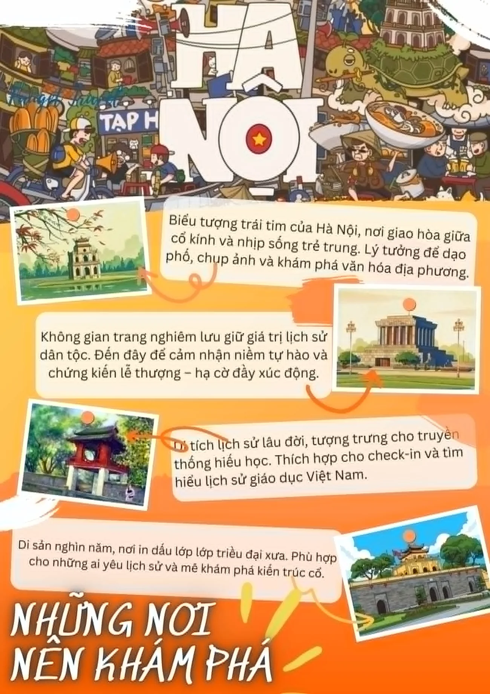

Thể hiện kỹ năng số
Chuyển các bài tập rời rạc thành một hành trình học tập có cấu trúc và liên kết.
Mình là Nguyễn Phương Danh, sinh viên ngành Kinh tế Phát triển tại Trường Đại học Kinh tế - ĐHQGHN. Portfolio này hệ thống hóa 6 bài tập từ quản lý dữ liệu, tìm kiếm học thuật đến sáng tạo và sử dụng AI có trách nhiệm.
 ✓ 6 báo cáo PDF đã đính kèm
AI · Dữ liệu · Hợp tác số
✓ 6 báo cáo PDF đã đính kèm
AI · Dữ liệu · Hợp tác số
Mục tiêu của mình không chỉ là hoàn thành sản phẩm, mà còn hiểu vì sao một quy trình số hiệu quả, cách đánh giá chất lượng đầu ra và vai trò của con người khi làm việc cùng AI.
Tổ chức dữ liệu khoa học: đặt tên nhất quán, lưu trữ logic và dễ truy xuất.
Khai thác thông tin có chọn lọc: đánh giá tác giả, cơ quan xuất bản, phương pháp và tính cập nhật.
Ứng dụng AI có kiểm soát: viết Prompt rõ ràng, kiểm chứng đầu ra, minh bạch và tôn trọng liêm chính học thuật.
Website được thiết kế theo đúng ba phần Giới thiệu - Dự án - Tổng kết, đồng thời tích hợp báo cáo PDF, ảnh minh họa và phần phản tư của từng bài.
Chuyển các bài tập rời rạc thành một hành trình học tập có cấu trúc và liên kết.
Mỗi dự án có ảnh minh họa, tóm tắt quá trình và đường dẫn mở báo cáo đầy đủ.
Nêu rõ điều đã làm được, hạn chế và hướng nâng cấp kỹ năng trong tương lai.

So sánh Prompt cơ bản, cải tiến và nâng cao cho ba tác vụ học tập.

Kết hợp ChatGPT, Gemini và Canva AI trong một quy trình sáng tạo có chỉnh sửa thủ công.

Tổng hợp ứng dụng AI trong kinh tế cùng các rủi ro, nguyên tắc và trách nhiệm của người học.
Mỗi bài có mục tiêu, quy trình, bằng chứng, kết quả, bài học và báo cáo PDF.